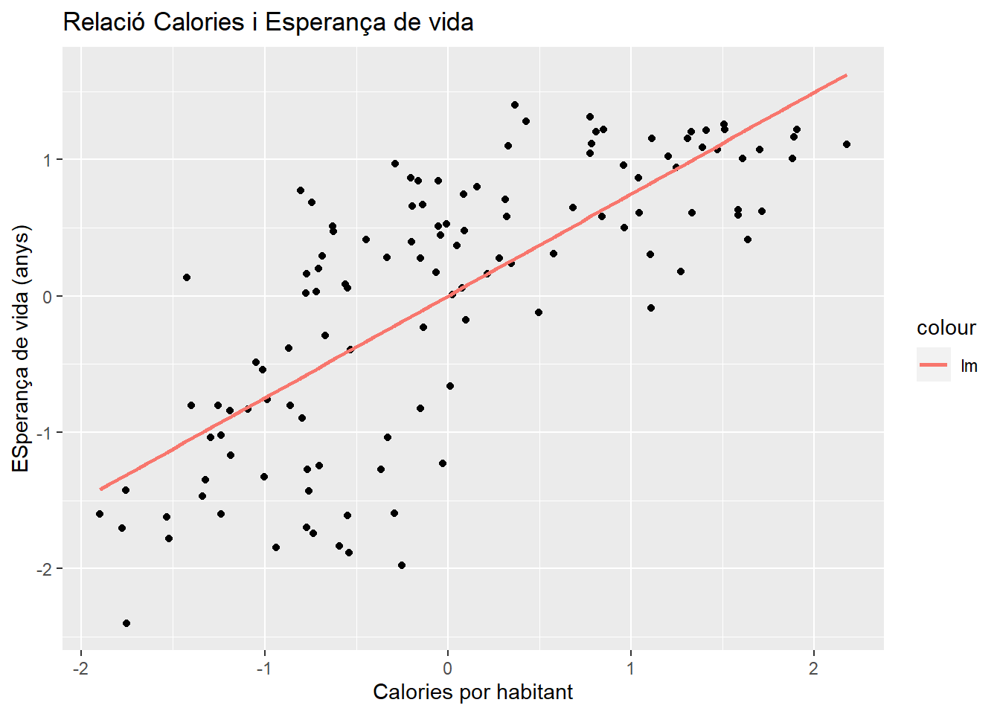
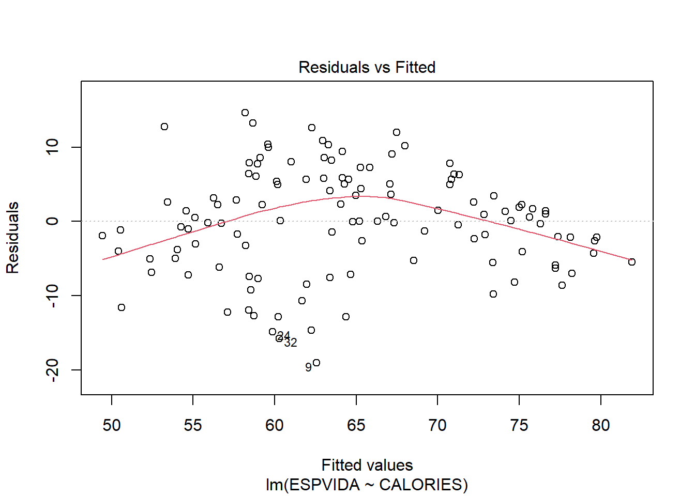

Capítol 2 Teoria Setmana 2 (2020-01-20)
2.1 Data Wrangling
Per modelar conceptes estadístics, cal domar abans les dades (data wrangling). Aquest procés té 3 parts principals.
Data Wrangling. Font: G.Glolemun y H.Wickham, 2017
2.1.1 Els data frames
2.1.1.1 Gapminder
Per comprendre l’evolució de la riquesa i l’esperança de vida de les persones a nivell de país i continent calen dades.
Our mission is to fight devastating ignorance with a fact-based worldview everyone can understand. – Gapminder
Hans Rosling de Gapminder feb.2006, va popularitzar Trendalyzer, en una famosa conferencia TED Talk (14,6M de visualitzacions). Trendalyzer, posteriorment adquirida por Google, permetia visualitzar fins a 5 dimensions. Actualment esta disponible en el següent enllaç.
library(gapminder)
library(knitr)
class(gapminder)## [1] "tbl_df" "tbl" "data.frame"head(gapminder)## # A tibble: 6 x 6
## country continent year lifeExp pop gdpPercap
## <fct> <fct> <int> <dbl> <int> <dbl>
## 1 Afghanistan Asia 1952 28.8 8425333 779.
## 2 Afghanistan Asia 1957 30.3 9240934 821.
## 3 Afghanistan Asia 1962 32.0 10267083 853.
## 4 Afghanistan Asia 1967 34.0 11537966 836.
## 5 Afghanistan Asia 1972 36.1 13079460 740.
## 6 Afghanistan Asia 1977 38.4 14880372 786.dim(gapminder)## [1] 1704 62.1.2 Importació de dades
2.1.2.1 Dades amb separador
cat(paste0(readLines("www/data/mtcars.csv", n = 6), collapse="\n"))## "mpg","cyl","disp","hp","drat","wt","qsec","vs","am","gear","carb"
## 21,6,160,110,3.9,2.62,16.46,0,1,4,4
## 21,6,160,110,3.9,2.875,17.02,0,1,4,4
## 22.8,4,108,93,3.85,2.32,18.61,1,1,4,1
## 21.4,6,258,110,3.08,3.215,19.44,1,0,3,1
## 18.7,8,360,175,3.15,3.44,17.02,0,0,3,2mtcars <- read.table("www/data/mtcars.csv", dec=".",sep=",", header=TRUE)Los parámetros especificados son:
dec: El separador decimal. En Europa se acostumbra a utilizar la coma “,”sep: El separador de columnas. Es habitual usar también “;” y “ cuando es un tabulador.header: Indica si la primera fila contiene el nombre de las variables o no.
En el caso de mtcars (separador por comas) es más simple usar read.csv.
mtcars <- read.csv("www/data/mtcars.csv")
dim(mtcars)## [1] 32 11Cuando el csv es europeo, “,” decimal y “;” como separador, se utiliza read.csv2().
kable(head(mtcars))| mpg | cyl | disp | hp | drat | wt | qsec | vs | am | gear | carb |
|---|---|---|---|---|---|---|---|---|---|---|
| 21.0 | 6 | 160 | 110 | 3.90 | 2.620 | 16.46 | 0 | 1 | 4 | 4 |
| 21.0 | 6 | 160 | 110 | 3.90 | 2.875 | 17.02 | 0 | 1 | 4 | 4 |
| 22.8 | 4 | 108 | 93 | 3.85 | 2.320 | 18.61 | 1 | 1 | 4 | 1 |
| 21.4 | 6 | 258 | 110 | 3.08 | 3.215 | 19.44 | 1 | 0 | 3 | 1 |
| 18.7 | 8 | 360 | 175 | 3.15 | 3.440 | 17.02 | 0 | 0 | 3 | 2 |
| 18.1 | 6 | 225 | 105 | 2.76 | 3.460 | 20.22 | 1 | 0 | 3 | 1 |
2.1.2.2 Texto con ancho fijo
cat(paste0(readLines("www/data/fwf-sample.txt", n = 6), collapse="\n"))## John Smith WA 418-Y11-4111
## Mary Hartford CA 319-Z19-4341
## Evan Nolan IL 219-532-c301Para leer texto de ancho fijo, se utiliza read.fwf().
fwf_sample <- read.fwf("www/data/fwf-sample.txt", widths=c(20,10,12)
, col.names=c("name", "state", "ssn"))widths: Son los anchos de cada variable.col.names: Nombres de las variables.
2.1.2.3 Leer Excel
library(readxl)
dataXlsx <- read_excel("www/data/data.xlsx")
dim(dataXlsx)## [1] 19 62.1.2.4 Leer SPSS
library(foreign)
dataSAV <- read.spss("http://psych.colorado.edu/~carey/Courses/PSYC7291/DataSets/SPSS/crime.sav", to.data.frame =TRUE, use.value.labels = TRUE)
dim(dataSAV)## [1] 50 82.1.2.5 Leer RData
Leer objetos de R.
load("www/data/rStateDataSold.RData")
dim(rStateDataSold)## [1] 192 82.1.2.6 Guardar RData
Guardar varios objetos de R.
save(dataXlsx, dataSAV, rStateDataSold, file="www/temp/EjemploSave2.RData")2.1.3 Dades ordenades
“Datos ordenados” es un conjunto de datos que ha sido estructurado de forma que cada variable es una columna y cada observación (o caso) es una fila. - H. Wickham 2013. Journal of Statistical Software
Para resaltar la importancia de esta etapa, G.Glolemun y H.Wickham, 2017 utilizan las siguiente cita y su posterior adaptación.
“Todas las familias felices se parecen unas a otras, pero cada familia infeliz lo es a su manera.” –– León Tolstoy
“Todos los set de datos ordenados se parecen unos a otros, pero cada set de datos desordenado lo es a su manera” — Hadley Wickham
En la misma referencia, se explica tres reglas que hacen que un conjunto de datos sea ordenado:
- Cada variable debe tener su propia columna.
- Cada observación debe tener su propia fila.
- Cada valor debe tener su propia celda.
También se utiliza la siguiente figura para visualizar mejor estas reglas.

Imagen: Reglas que hacen que un conjunto de datos sea ordenado: las variables están en columnas, las observaciones en filas y los valores en celdas. (Fuente: G.Glolemun y H.Wickham, 2017
Com puedes ver, la definición de tidy data, equipara las columnas de la tabla con el concepto de Variable, así como las filas a observaciones, hecho que simplifica enormemente las posteriores fases de analisis de la información.
2.1.4 Transformació
El universo de Tydiverse consiste en una colección de packages de R orientados al Data Science. Se recomienda la consulta del libro online R para Ciencia de Datos.
El package dplyr, al igual que ggplot2, está desarrollado por Hadley Wickham. Este paquete, supone un cambio de filosofía en la forma de trabajar con los datos y se está transformando en un nuevo estándar en R.
2.1.4.1 Dplyr: arrange, filter, select
arange: Ordena los registros de un data frame.filter: Filtra a partir de un conjunto condiciones lógicas.select: Selecciona las variables.
Países asiáticos con PIB per cápita inferior a 1000 $ en 2007.
suppressPackageStartupMessages(library(tidyverse))
pais07Sel <- gapminder %>%
arrange(desc(lifeExp)) %>%
filter(continent=='Asia' & gdpPercap < 1000 & year ==2007 ) %>%
dplyr::select(country,lifeExp,gdpPercap)
kable(pais07Sel)| country | lifeExp | gdpPercap |
|---|---|---|
| Myanmar | 62.069 | 944.0000 |
| Afghanistan | 43.828 | 974.5803 |
Observa que no necesitan de comillas para referirse a las variables. También utilizan el operador %>% llamado pipe. Éste sustituye el parámetro de entrada de datos. De esta forma, permite escribir las operaciones de izquierda a derecha facilitando así su lectura.
2.1.4.2 Dplyr: mutate, group_by, summarise
mutate: Crea o modifica las variables del data frame.group_by: Especifica una o varias variables de agrupación.summarise: define los agregados de las variables originales.
Esperanza de vida y PIB per cápita medio por continente y año.
continent_year <- gapminder %>%
arrange(continent,year) %>%
mutate(lifeExp_total = lifeExp * pop
, gdp_total = gdpPercap * pop) %>%
group_by(continent,year) %>%
dplyr::summarize(n_countries=n()
, lifeExp = sum(lifeExp_total ) /
sum(pop )
, gdp_capita = sum(gdp_total) /
sum(pop)
, pop = sum(pop))
kable(continent_year %>% head(10))| continent | year | n_countries | lifeExp | gdp_capita | pop |
|---|---|---|---|---|---|
| Africa | 1952 | 52 | 38.79973 | 1311.221 | 237640501 |
| Africa | 1957 | 52 | 40.94031 | 1444.952 | 264837738 |
| Africa | 1962 | 52 | 43.09925 | 1540.599 | 296516865 |
| Africa | 1967 | 52 | 45.17721 | 1774.847 | 335289489 |
| Africa | 1972 | 52 | 47.21229 | 2063.171 | 379879541 |
| Africa | 1977 | 52 | 49.20883 | 2244.799 | 433061021 |
| Africa | 1982 | 52 | 51.01744 | 2295.192 | 499348587 |
| Africa | 1987 | 52 | 52.82479 | 2180.764 | 574834110 |
| Africa | 1992 | 52 | 53.37292 | 2071.615 | 659081517 |
| Africa | 1997 | 52 | 53.28327 | 2098.865 | 743832984 |
Para la evolución de los continentes en ggplot2, es útil el geom_path()
library(ggrepel)
ggplot(continent_year, aes(x=gdp_capita
, y=lifeExp
, color =continent)) +
geom_path() +
scale_x_log10() +
geom_text_repel(aes(label=year), size=2, color="black") +
labs(title="Evolución continentes (ponderado)")Figura 2.1: Evolución de los continentes
El gráfico muestra la traza que han recorrido los continentes en sus valores medios de PIB per cápita y Esperanza de vida. Se confirma la mayor progresión de Asia. Vemos que, como América y Europa, en media tienen un comportamiento bastante paralelo. Se observa como el recorrido de África, aunque partiendo de valores muy inferiores, ha sido positiva y ha incrementado de forma similar el resto de continentes.
2.2 Visualización
Un simple gráfico ha brindado más información a la mente del analista de datos que cualquier otro dispositivo. - John Tukey
2.2.1 Estructura básica
ggplot2 es un sistema coherente para hacer gráficos.
suppressPackageStartupMessages(library(HistData))
ggplot(data= Galton, mapping = aes(x=parent, y= child)) +
geom_point()Figura 2.2: Altura padres e hijos (Galton, 1885)
La altura de los padres es la media entre la altura del padre y 1.08 veces la de la madre. En los datos hay 205 padres diferentes y 928 hijos. Los datos fueron tabulados y por lo tanto discretizado.
Para visualizar los datos resulta útil introducir aleatoriedad con jitter.
ggplot(data= Galton, mapping = aes(x=parent, y= child)) +
geom_jitter()
Figura 2.3: Jitter altura padres e hijos (Galton, 1885)
Los componentes mínimos son:
ggplotdefine el conjunto de datos en el parámetrodataque debería contener todas las variables del gráfico.geom_<función>: Define el tipo de gráfico. Por ejemplo, geom_point es un gráfico de puntos.mapping: define mapeo de parámetros estéticos (x,y…) a través de la funciónaes().
A diferencia de plot, ggplot permite asignar el gráfico a un objeto R.
p1 <- ggplot(Galton, aes(x=parent, y= child)) +
geom_jitter()Posteriormente, puedes añadirle otros elementos gráficos.
p1 <- p1 +
geom_smooth(method='lm', se=FALSE, formula = y~x, aes(color = "lm")) +
geom_abline(aes(intercept = 0, slope = 1, color = "Diagonal y = x")) +
labs(title = "Relación altura padres e hijos (Galton, 1885)"
,x = "Media altura padres (pulgadas)", y = "Altura hijos (pulgadas)")
p1Figura 2.4: Regresión Simple y recta diagonal altura padres e hijos (Galton, 1885)
Si defines el mapeo de estéticos en
ggplotya no es necesario definirlos en los geoms.
2.2.2 Otros geoms
Otros ejemplos de geoms con los datos de gapminder en 2007.
library(ggrepel)
suppressPackageStartupMessages(library(cowplot))
paises07 <- as.data.frame(gapminder %>% filter(year==2007)) # paises en 2007
p1 <- ggplot(paises07, aes(x=lifeExp)) +
geom_histogram()
p2 <- ggplot(paises07, aes(x=continent, fill=continent)) +
geom_bar()
p3 <- ggplot(paises07, aes(y=lifeExp, fill=continent)) +
geom_boxplot()
p4 <- ggplot(paises07 %>% arrange(desc(lifeExp)) %>% head(25),
aes(x=gdpPercap, y=lifeExp)) +
geom_point() +
geom_label_repel(aes(label=country), size=3)
# arrange two plots into one column
plot_grid(p1, p2, p3, p4,
labels = c("histograma","barras","boxplot","Etiquetas"), ncol = 2)2.2.2.1 Panel de datos
facet_wrap()
library(datos)
p00 <- ggplot(paises
, aes(x=pib_per_capita
, y=esperanza_de_vida
, color=continente
, size=poblacion
, label=pais))+
geom_point() +
scale_x_log10() +
facet_wrap(~anio)+
labs(title="Paises en 2007")
p00Figura 2.5: Más facet_wrap() y facet_grid()
2.2.2.2 Etiquetas
geom_label()
paises07 <- paises %>% filter(anio == 2007)
p07 <- ggplot(paises07
, aes(x=pib_per_capita
, y=esperanza_de_vida
, color=continente
, size=poblacion))+
geom_point() +
scale_x_log10() +
labs(title="Paises en 2007")+
geom_label(data=paises07 %>%
filter(pais=="China")
, nudge_y=2
, aes(label=pais)
, size=4
, color="black")
p07Figura 2.6: Más geom_label()
2.2.2.3 Paleta colores
scale_colour_brewer()
p07 <- p07 +
scale_colour_brewer(
palette = "Dark2")
p07Figura 2.7: Más paletas COLORBREWER
2.2.2.4 Zoom
coord_cartesian()
p07 <- p07 +
coord_cartesian(
xlim=c(300,5000)
, ylim=c(38,45))
p07Figura 2.8: Más coord_cartesian()
2.2.2.6 Gráficos interactivos
ggplotly()
suppressPackageStartupMessages(library(plotly))
ggplotly(p00)Figura 2.10: Más R Plotly
- Mueve el ratón por encima del gráfico para identificar los países.
- Des de la leyenda puedes filtrar los continentes que se quieren mostrar.
2.3 Modelar: Regressió simple
Origen del concepte de regressió aplicat.
p1 <- ggplot(data= Galton, mapping = aes(x=parent, y= child)) +
geom_jitter()+
geom_smooth(method='lm', se=FALSE, formula = y~x, aes(color = "lm")) +
geom_abline(aes(intercept = 0, slope = 1, color = "Diagonal y = x")) +
labs(title = "Relación altura padres e hijos (Galton, 1885)"
,x = "Media altura padres (pulgadas)", y = "Altura hijos (pulgadas)")
p1Figura 2.11: Regresión Simple y recta diagonal altura padres e hijos (Galton, 1885)
2.3.0.1 Ingressos i Despeses
Es una relació molt comú a la natura.
data= read.table("http://84.89.132.1/~satorra/dades/M2013RegressioSamp.txt", header =T)
names(data)## [1] "Lrenda" "Ldespeses" "Genere" "Vot"head(data,4)## Lrenda Ldespeses Genere Vot
## 1 9.477 4.503 1 1
## 2 11.435 6.147 1 0
## 3 10.686 4.961 0 0
## 4 10.407 3.993 0 0p1 <- ggplot(data= data, mapping = aes(x=scale(Lrenda), y= scale(Ldespeses))) +
geom_point() +
geom_smooth(method='lm', se=FALSE, formula = y~x, aes(color = "lm")) +
geom_abline(aes(intercept = 0, slope = 1, color = "Diagonal y = x")) +
labs(title = "Relació Ingresos i Despeses"
,x = "Log Ingresos Estandarditzat", y = "Log Despeses Estandarditzat")
p1
Figura 2.12: Regresión Simple y recta diagonal Ingressos y Despeses
cor(data$Lrenda,data$Ldespeses)## [1] 0.43852042.3.0.2 PAISOS.SAV
Alerta! Correlació no indica sempre causalitat. Poden existir altres factors ocults amb un efecte sobre ambdós factors.
library(foreign)
data <- read.spss( "http://84.89.132.1/~satorra/dades/PAISOS.SAV", use.value.labels = TRUE, to.data.frame = TRUE )
names(data)## [1] "IDH" "NIVELL" "PAIS" "ESPVIDA" "PIB" "ALFAB" "CONT"
## [8] "CALORIES" "HABMETG" "DIARIS" "TV" "SANITAT" "AGRICULT" "INDUST"dim(data)## [1] 160 14data <- data %>% select(PAIS, ESPVIDA, CALORIES, PIB, HABMETG , ALFAB)
data %>% summary()## PAIS ESPVIDA CALORIES PIB HABMETG
## Length:160 Min. :39.00 Min. :1505 Min. : 70.0 Min. : 211.0
## Class :character 1st Qu.:55.67 1st Qu.:2248 1st Qu.: 532.5 1st Qu.: 642.2
## Mode :character Median :67.60 Median :2614 Median : 1715.0 Median : 2000.0
## Mean :64.50 Mean :2661 Mean : 5778.5 Mean : 6709.6
## 3rd Qu.:72.58 3rd Qu.:3166 3rd Qu.: 6337.5 3rd Qu.: 8901.5
## Max. :79.50 Max. :3947 Max. :36730.0 Max. :50000.0
## NA's :8 NA's :22 NA's :18
## ALFAB
## Min. :12.40
## 1st Qu.:54.50
## Median :81.30
## Mean :73.39
## 3rd Qu.:94.35
## Max. :99.00
## Observem que dels 160 països, alguns tenen valors faltants en alguna de les variables.
En següents sessions es parlará sobre altres enfocs posibles. De moment, un primer tractament és consisteix en filtrar els països amb valors faltants.
data <- na.omit(data)
rownames(data)<-NULL # reiniciem la numeracio de les files
dim(data)## [1] 120 6p1 <- ggplot(data= data, mapping = aes(x=scale(CALORIES), y= scale(ESPVIDA))) +
geom_point() +
geom_smooth(method='lm', se=FALSE, formula = y~x, aes(color = "lm")) +
labs(title = "Relació Calories i Esperança de vida"
,x = "Calories por habitant", y = "ESperança de vida (anys)")
p1Figura 2.13: Regresión Simple y recta diagonal Calories i Esperança de vida
2.3.1 Regressió simple
reg1<- lm(ESPVIDA ~ CALORIES, data=data)
summary(reg1)##
## Call:
## lm(formula = ESPVIDA ~ CALORIES, data = data)
##
## Residuals:
## Min 1Q Median 3Q Max
## -19.0797 -5.0123 0.0774 5.4410 14.6255
##
## Coefficients:
## Estimate Std. Error t value Pr(>|t|)
## (Intercept) 27.060569 3.135144 8.631 3.35e-14 ***
## CALORIES 0.013896 0.001136 12.232 < 2e-16 ***
## ---
## Signif. codes: 0 '***' 0.001 '**' 0.01 '*' 0.05 '.' 0.1 ' ' 1
##
## Residual standard error: 7.107 on 118 degrees of freedom
## Multiple R-squared: 0.5591, Adjusted R-squared: 0.5553
## F-statistic: 149.6 on 1 and 118 DF, p-value: < 2.2e-16Estandarditzem les variables i comparem models amb stargazer.
reg1s <- lm(scale(ESPVIDA) ~ scale(CALORIES), data=data)
# install.packages("stargazer")
library(stargazer)
stargazer(reg1, reg1s, type='text')##
## ===========================================================
## Dependent variable:
## ----------------------------
## ESPVIDA scale(ESPVIDA)
## (1) (2)
## -----------------------------------------------------------
## CALORIES 0.014***
## (0.001)
##
## scale(CALORIES) 0.748***
## (0.061)
##
## Constant 27.061*** -0.000
## (3.135) (0.061)
##
## -----------------------------------------------------------
## Observations 120 120
## R2 0.559 0.559
## Adjusted R2 0.555 0.555
## Residual Std. Error (df = 118) 7.107 0.667
## F Statistic (df = 1; 118) 149.611*** 149.611***
## ===========================================================
## Note: *p<0.1; **p<0.05; ***p<0.01Observa que \(0.748^2=0.559\) .
2.3.1.1 Residus versus predicció
plot(reg1,1)data$PAIS[c(34,32,9)]## [1] "Mauritania " "Guinea " "Guinea Bissau "reg2=lm(ESPVIDA ~ CALORIES + ALFAB, data=data )
anova(reg1,reg2)## Analysis of Variance Table
##
## Model 1: ESPVIDA ~ CALORIES
## Model 2: ESPVIDA ~ CALORIES + ALFAB
## Res.Df RSS Df Sum of Sq F Pr(>F)
## 1 118 5959.5
## 2 117 2852.7 1 3106.8 127.42 < 2.2e-16 ***
## ---
## Signif. codes: 0 '***' 0.001 '**' 0.01 '*' 0.05 '.' 0.1 ' ' 1stargazer(reg1,reg2, type='text')##
## =====================================================================
## Dependent variable:
## -------------------------------------------------
## ESPVIDA
## (1) (2)
## ---------------------------------------------------------------------
## CALORIES 0.014*** 0.007***
## (0.001) (0.001)
##
## ALFAB 0.278***
## (0.025)
##
## Constant 27.061*** 25.403***
## (3.135) (2.183)
##
## ---------------------------------------------------------------------
## Observations 120 120
## R2 0.559 0.789
## Adjusted R2 0.555 0.785
## Residual Std. Error 7.107 (df = 118) 4.938 (df = 117)
## F Statistic 149.611*** (df = 1; 118) 218.659*** (df = 2; 117)
## =====================================================================
## Note: *p<0.1; **p<0.05; ***p<0.01plot(reg2,1)data$PAIS[c(6,9,105)]## [1] "Uganda " "Guinea Bissau " "Kuwait "plot(data %>% select(ESPVIDA, CALORIES, PIB, HABMETG, ALFAB))
corr_select <- data %>% select(ESPVIDA, CALORIES, PIB, HABMETG, ALFAB) %>% cor(use="pairwise.complete.obs") %>% round(3)
kable(corr_select)| ESPVIDA | CALORIES | PIB | HABMETG | ALFAB | |
|---|---|---|---|---|---|
| ESPVIDA | 1.000 | 0.748 | 0.629 | -0.739 | 0.839 |
| CALORIES | 0.748 | 1.000 | 0.616 | -0.605 | 0.619 |
| PIB | 0.629 | 0.616 | 1.000 | -0.378 | 0.524 |
| HABMETG | -0.739 | -0.605 | -0.378 | 1.000 | -0.648 |
| ALFAB | 0.839 | 0.619 | 0.524 | -0.648 | 1.000 |
library(ggcorrplot)
corr_select %>% ggcorrplot(type = "lower", lab = TRUE, show.legend = F)
# Transformation of variables (linearizing regression)
data <- data %>% mutate(
LPIB = log(PIB)
,Lhabmetges = log(HABMETG)
)
plot(data %>% select(ESPVIDA, CALORIES, LPIB, Lhabmetges, ALFAB))
corr_log_select <- data %>% select(ESPVIDA, CALORIES, PIB, LPIB, HABMETG, Lhabmetges, ALFAB) %>% cor(use="pairwise.complete.obs") %>% round(3)
corr_log_select %>% ggcorrplot(type = "lower", lab = TRUE, show.legend = F)reg3 <- lm(ESPVIDA ~ CALORIES + LPIB + Lhabmetges +ALFAB, data=data)
stargazer(reg1, reg2, reg3, type='text')##
## ==============================================================================================
## Dependent variable:
## --------------------------------------------------------------------------
## ESPVIDA
## (1) (2) (3)
## ----------------------------------------------------------------------------------------------
## CALORIES 0.014*** 0.007*** 0.001
## (0.001) (0.001) (0.001)
##
## LPIB 1.821***
## (0.452)
##
## Lhabmetges -2.388***
## (0.523)
##
## ALFAB 0.278*** 0.165***
## (0.025) (0.026)
##
## Constant 27.061*** 25.403*** 55.475***
## (3.135) (2.183) (7.637)
##
## ----------------------------------------------------------------------------------------------
## Observations 120 120 120
## R2 0.559 0.789 0.857
## Adjusted R2 0.555 0.785 0.852
## Residual Std. Error 7.107 (df = 118) 4.938 (df = 117) 4.098 (df = 115)
## F Statistic 149.611*** (df = 1; 118) 218.659*** (df = 2; 117) 172.404*** (df = 4; 115)
## ==============================================================================================
## Note: *p<0.1; **p<0.05; ***p<0.012.3.2 Regressió lineal simple
\[ Y = \beta_0 + \beta_1x + \epsilon \]
- La \(\beta_0\) terme independent
- La \(\beta_1\) coeficient de regressió
- La esperança, \(E(Y)=\beta_0+\beta_1E(x)\)
- El coeficient, \(\beta_1\) és un increment en el valor esperat de \(Y\) d’un augmenta unitari en la variable X
- El \(\epsilon\) és un terme de pertorbació, variable estadística \(\epsilon∼N(0,\sigma^2)\), valor esperat zero i variància constant. Noteu que la variància de \(\epsilon\) representa la intensitat de variació de Y al voltant de la recta de regressió \(Y=\beta_0+\beta_1x\).
Ajust de la regressió:
\[ Y = b_0 + b_1x + \epsilon \]
\(b_0=27.061\), \(b_1=0.014\), \(b_0\) i \(b_1\) són estimacions de \(\beta_0\) i \(\beta_1\) respectivament.
Totes les estimacions estan subjectes a un error tipus (standard error). En el nostre exemple: l’error tipus de l’estimació ´de \(beta_1=0.014\) és \(0.001\).
Coeficient de determinació múltiple, \(R^2=0.559\) és a dir, \(55.9%\) de la variació de \(Y\) és deguda a la variable X.
2.3.3 Regressió lineal múltiple
\[ Y = \beta_0 + \beta_1x_1 + \beta_2x_2 + \epsilon \]
- El \(\beta_0\) terme independent
- La \(\beta_1\), \(\beta_2\) coeficients de regressió parcial
- La Esperança: \(E(Y)=\beta_0+\beta_1E(x_1)+\beta_2E(x_2)\)
- \(\beta_2\) és un increment en el valor esperat de \(Y\) d’un augment unitari en la variable \(X_2\) quan \(X_1\) es manté constant. Idem per \(\beta_1\) (versus \(X_2\))
- \(\epsilon\) terme de perturbació, variable estadística \(\epsilon∼N(0,\sigma^2)\), valor esperat zero i variància constant. Noteu que la variància de \(\epsilon\) representa la intensitat de variació de Y al voltant de la recta de regressió \(Y=\beta_0+\beta_1x_1+\beta_2x_2\).
Regressió estimada:
\[ Y = b_0 + b_1x_1 + b_2x_2 \]
Els coeficients: \(b_0=25.403\); \(b_1=0.007\); \(b_2=0.278\)
El \(R^2=0.044\) és un \(4.4%\) de variació de \(Y\) ve explicada per la variació conjunta de \(X_1\) i \(X_2\).